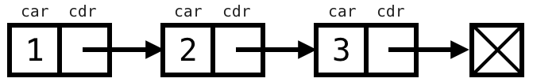
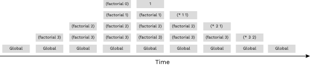
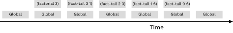

Lab 8 Solutions
Solution Files
Attendance
If you are in a regular 61A lab, your TA will come around and check you in. You need to submit the lab problems in addition to attending to get credit for lab. If you are in the mega lab, you only need to submit the lab problems to get credit.
If you miss lab for a good reason (such as sickness or a scheduling conflict) or you don't get checked in for some reason, just fill out this form within two weeks to receive attendance credit.
Scheme Introduction
The 61A Scheme interpreter is included in each Scheme assignment. To start it,
type python3 scheme in a terminal. To load a Scheme file called f.scm, type python3 scheme -i f.scm. To exit the Scheme interpreter, type
(exit).
Recommended VS Code Extensions
If you choose to use VS Code as your text editor (instead of the web-based editor), install the vscode-scheme extension so that parentheses are highlighted.
Before:

After:

Tip: You can open the terminal in VS Code by pressing Control + ` (the key above Tab).
Required Questions
Scheme
Consult the drop-downs below if you need a refresher on Scheme. It's okay to skip directly to the questions and refer back here should you get stuck.
Atomic expressions (also called atoms) are expressions without sub-expressions, such as numbers, boolean values, and symbols.
scm> 1234 ; integer
1234
scm> 123.4 ; real number
123.4
scm> #f ; the Scheme equivalent of False in Python
#fA Scheme symbol is equivalent to a Python name. A symbol evaluates to the value bound to that symbol in the current environment. (They are called symbols rather than names because they include + and other arithmetic symbols.)
scm> quotient ; A symbol bound to a built-in procedure
#[quotient]
scm> + ; A symbol bound to a built-in procedure
#[+]In Scheme, all values except #f (equivalent to False in Python) are true
values (unlike Python, which has other false values, such as 0).
scm> #t
#t
scm> #f
#fScheme uses Polish prefix notation, in which the operator expression comes before
the operand expressions. For example, to evaluate 3 * (4 + 2), we write:
scm> (* 3 (+ 4 2))
18Just like in Python, to evaluate a call expression:
- Evaluate the operator. It should evaluate to a procedure.
- Evaluate the operands, left to right.
- Apply the procedure to the evaluated operands.
Here are some examples using built-in procedures:
scm> (+ 1 2)
3
scm> (- 10 (/ 6 2))
7
scm> (modulo 35 4)
3
scm> (even? (quotient 45 2))
#tDefine:
The define form is used to assign values to symbols. It has the following syntax:
(define <symbol> <expression>)scm> (define pi (+ 3 0.14))
pi
scm> pi
3.14To evaluate the define expression:
- Evaluate the final sub-expression (
<expression>), which in this case evaluates to3.14. - Bind that value to the symbol (
symbol), which in this case ispi. - Return the symbol.
The define form can also define new procedures, described in the "Defining Functions" section.
If Expressions:
The if special form evaluates one of two expressions based on a predicate.
(if <predicate> <if-true> <if-false>)The rules for evaluating an if special form expression are as follows:
- Evaluate the
<predicate>. - If the
<predicate>evaluates to a true value (anything but#f), evaluate and return the value of the<if-true>expression. Otherwise, evaluate and return the value of the<if-false>expression.
For example, this expression does not error and evaluates to 5, even though the
sub-expression (/ 1 (- x 3)) would error if evaluated.
scm> (define x 3)
x
scm> (if (> (- x 3) 0) (/ 1 (- x 3)) (+ x 2))
5The <if-false> expression is optional.
scm> (if (= x 3) (print x))
3Let's compare a Scheme if expression with a Python if statement:
- In Scheme:
(if (> x 3) 1 2)- In Python:
if x > 3:
1
else:
2The Scheme if expression evaluates to a number (either 1 or 2, depending on
x). The Python statement does not evaluate to anything, and so the 1 and 2
cannot be used or accessed.
Another difference between the two is that it's possible to add more lines of
code into the suites of the Python if statement, while a Scheme if
expression expects just a single expression in each of the <if-true> and
<if-false> positions.
One final difference is that in Scheme, you cannot write elif clauses.
Cond Expressions:
The cond special form can include multiple predicates (like if/elif in Python):
(cond
(<p1> <e1>)
(<p2> <e2>)
...
(<pn> <en>)
(else <else-expression>))The first expression in each clause is a predicate. The second expression in
the clause is the return expression corresponding to its predicate. The else
clause is optional; its <else-expression> is the return expression if none of
the predicates are true.
The rules of evaluation are as follows:
- Evaluate the predicates
<p1>,<p2>, ...,<pn>in order until one evaluates to a true value (anything but#f). - Evalaute and return the value of the return expression corresponding to the first predicate expression with a true value.
- If none of the predicates evaluate to true values and there is an
elseclause, evaluate and return<else-expression>.
For example, this cond expression returns the nearest multiple of 3 to x:
scm> (define x 5)
x
scm> (cond ((= (modulo x 3) 0) x)
((= (modulo x 3) 1) (- x 1))
((= (modulo x 3) 2) (+ x 1)))
6Lambdas:
The lambda special form creates a procedure.
(lambda (<param1> <param2> ...) <body>)This expression will create and return a procedure with the given formal
parameters and body, similar to a lambda expression in Python.
scm> (lambda (x y) (+ x y)) ; Returns a lambda procedure, but doesn't assign it to a name
(lambda (x y) (+ x y))
scm> ((lambda (x y) (+ x y)) 3 4) ; Create and call a lambda procedure in one line
7Here are equivalent expressions in Python:
>>> lambda x, y: x + y
<function <lambda> at ...>
>>> (lambda x, y: x + y)(3, 4)
7The <body> may contain multiple expressions. A scheme procedure returns the
value of the last expression in its body.
The define form can create a procedure and give it a name:
(define (<symbol> <param1> <param2> ...) <body>)For example, this is how we would define the double procedure:
scm> (define (double x) (* x 2))
double
scm> (double 3)
6Here's an example with three arguments:
scm> (define (add-then-mul x y z)
(* (+ x y) z))
scm> (add-then-mul 3 4 5)
35When a define expression is evaluated, the following occurs:
- Create a procedure with the given parameters and
<body>. - Bind the procedure to the
<symbol>in the current frame. - Return the
<symbol>.
The following two expressions are equivalent:
scm> (define add (lambda (x y) (+ x y)))
add
scm> (define (add x y) (+ x y))
addAs you read through this section, it may be difficult to understand the differences between the various representations of Scheme containers. We recommend that you use our online Scheme interpreter to see the box-and-pointer diagrams of pairs and lists that you're having a hard time visualizing! (Use the command
(autodraw)to toggle the automatic drawing of diagrams.)
Lists
Scheme lists are very similar to the linked lists we've been working with in
Python. Just like how a linked list is constructed of a series of Link
objects, a Scheme list is constructed with a series of pairs, which are created
with the constructor cons.
Scheme lists require that the cdr is either another list or nil, an empty list.
A list is displayed in the interpreter as a sequence of values (similar to the
__str__ representation of a Link object). For example,
scm> (cons 1 (cons 2 (cons 3 nil)))
(1 2 3)Here, we've ensured that the second argument of each cons expression is
another cons expression or nil.

We can retrieve values from our list with the car and cdr procedures, which
now work similarly to the Python Link's first and rest attributes.
(Curious about where these weird names come from? Check out their
etymology.)
scm> (define a (cons 1 (cons 2 (cons 3 nil)))) ; Assign the list to the name a
a
scm> a
(1 2 3)
scm> (car a)
1
scm> (cdr a)
(2 3)
scm> (car (cdr (cdr a)))
3If you do not pass in a pair or nil as the second argument to cons, it will
error:
scm> (cons 1 2)
Errorlist Procedure
There are a few other ways to create lists. The list procedure takes in an
arbitrary number of arguments and constructs a list with the values of these
arguments:
scm> (list 1 2 3)
(1 2 3)
scm> (list 1 (list 2 3) 4)
(1 (2 3) 4)
scm> (list (cons 1 (cons 2 nil)) 3 4)
((1 2) 3 4)Note that all of the operands in this expression are evaluated before being put into the resulting list.
Quote Form
We can also use the quote form to create a list, which will construct the exact
list that is given. Unlike with the list procedure, the argument to ' is
not evaluated.
scm> '(1 2 3)
(1 2 3)
scm> '(cons 1 2) ; Argument to quote is not evaluated
(cons 1 2)
scm> '(1 (2 3 4))
(1 (2 3 4))Built-In Procedures for Lists
There are a few other built-in procedures in Scheme that are used for lists. Try them out in the interpreter!
scm> (null? nil) ; Checks if a value is the empty list
True
scm> (append '(1 2 3) '(4 5 6)) ; Concatenates two lists
(1 2 3 4 5 6)
scm> (length '(1 2 3 4 5)) ; Returns the number of elements in a list
5Q1: Over or Under
Define a procedure over-or-under which takes in a number num1 and a number num2
and returns the following:
- -1 if
num1is less thannum2 - 0 if
num1is equal tonum2 - 1 if
num1is greater thannum2
Note: Remember that every parenthesis in Scheme makes a function call. For example, just typing
0in the Scheme interpeter will return0. However, typing(0)will cause an Error because0is not a function.
Challenge: Implement this in 2 different ways using if and cond!
(define (over-or-under num1 num2)
(cond
((< num1 num2) -1)
((= num1 num2) 0)
(else 1))
)Use Ok to test your code:
python3 ok -q over_or_underQ2: Compose
Write the procedure composed, which takes in procedures f and g
and returns a new procedure. This new procedure takes in a number x
and returns the result of calling f on g of x.
Note: Remember to use Scheme syntax when calling functions. The form is
(func arg), notfunc(arg).
(define (composed f g)
(lambda (x) (f (g x))))Use Ok to test your code:
python3 ok -q composedQ3: Repeat
Write the procedure repeat, which takes in a procedure f and a number n, and outputs a new procedure. This new procedure takes in a number x and returns the result of calling f on x a total of n times. For example:
scm> (define (square x) (* x x))
square
scm> ((repeat square 2) 5) ; (square (square 5))
625
scm> ((repeat square 3) 3) ; (square (square (square 3)))
6561
scm> ((repeat square 1) 7) ; (square 7)
49Hint: The
composedfunction you wrote in the previous problem might be useful.
(define (repeat f n)
; note: this relies on `composed` being implemented correctly
(if (< n 1)
(lambda (x) x)
(composed f (repeat f (- n 1)))))Use Ok to test your code:
python3 ok -q repeatQ4: Greatest Common Divisor
The Greatest Common Divisor (GCD) is the largest integer that evenly divides two positive integers.
Write the procedure gcd, which computes the GCD of numbers a and b using
Euclid's algorithm, which recursively uses the fact that the GCD of two values is either of
the following:
- the smaller value if it evenly divides the larger value, or
- the greatest common divisor of the smaller value and the remainder of the larger value divided by the smaller value
In other words, if a is greater than b and a is not divisible by
b, then
gcd(a, b) = gcd(b, a % b) # please note that this is Python syntaxYou may find the provided procedures
minandmaxhelpful. You can also use the built-inmoduloandzero?procedures.scm> (modulo 10 4) 2 scm> (zero? (- 3 3)) #t scm> (zero? 3) #f
(define (max a b) (if (> a b) a b))
(define (min a b) (if (> a b) b a))
(define (gcd a b)
(cond ((zero? a) b)
((zero? b) a)
((= (modulo (max a b) (min a b)) 0) (min a b))
(else (gcd (min a b) (modulo (max a b) (min a b))))))Use Ok to test your code:
python3 ok -q gcdTail Calls
When writing a recursive procedure, it's possible to write it in a tail recursive way, where all of the recursive calls are tail calls. A tail call occurs when a function calls another function as the last action of the current frame.
Consider this implementation of factorial that is not tail recursive:
(define (factorial n)
(if (= n 0)
1
(* n (factorial (- n 1)))))The recursive call occurs in the last line, but it is not the last expression
evaluated. After calling (factorial (- n 1)), the function still needs to
multiply that result with n. The final expression that is evaluated is
a call to the multiplication function, not factorial itself. Therefore,
the recursive call is not a tail call.
Here's a visualization of the recursive process for computing (factorial 6) :
(factorial 6)
(* 6 (factorial 5))
(* 6 (* 5 (factorial 4)))
(* 6 (* 5 (* 4 (factorial 3))))
(* 6 (* 5 (* 4 (* 3 (factorial 2)))))
(* 6 (* 5 (* 4 (* 3 (* 2 (factorial 1))))))
(* 6 (* 5 (* 4 (* 3 (* 2 1)))))
(* 6 (* 5 (* 4 (* 3 2))))
(* 6 (* 5 (* 4 6)))
(* 6 (* 5 24))
(* 6 120)
720The interpreter first must reach the base case and only then can it begin to calculate the products in each of the earlier frames.
We can rewrite this function using a helper function that remembers the temporary product that we have calculated so far in each recursive step.
(define (factorial n)
(define (fact-tail n result)
(if (= n 0)
result
(fact-tail (- n 1) (* n result))))
(fact-tail n 1))fact-tail makes a single recursive call to fact-tail, and
that recursive call is the last expression to be evaluated, so it is a tail
call. Therefore, fact-tail is a tail recursive process.
Here's a visualization of the tail recursive process for computing (factorial 6):
(factorial 6)
(fact-tail 6 1)
(fact-tail 5 6)
(fact-tail 4 30)
(fact-tail 3 120)
(fact-tail 2 360)
(fact-tail 1 720)
(fact-tail 0 720)
720The interpreter needed less steps to come up with the result, and it didn't need to re-visit the earlier frames to come up with the final product.
In this example, we've utilized a common strategy in implementing tail-recursive procedures which is to pass the result that we're building (e.g. a list, count, sum, product, etc.) as a argument to our procedure that gets changed across recursive calls. By doing this, we do not have to do any computation to build up the result after the recursive call in the current frame, instead any computation is done before the recursive call and the result is passed to the next frame to be modified further. Often, we do not have a parameter in our procedure that can store this result, but in these cases we can define a helper procedure with an extra parameter(s) and recurse on the helper. This is what we did in the factorial procedure above, with fact-tail having the extra parameter result.
Tail Call Optimization
When a recursive procedure is not written in a tail recursive way, the interpreter must have enough memory to store all of the previous recursive calls.
For example, a call to the (factorial 3) in the non tail-recursive version
must keep the frames for all the numbers from 3 down to the base case,
until it's finally able to calculate the intermediate products and forget those frames:

For non tail-recursive procedures, the number of active frames grows proportionally to the number
of recursive calls. That may be fine for small inputs, but imagine calling factorial
on a large number like 10000. The interpreter would need enough memory for all 1000 calls!
Fortunately, proper Scheme interpreters implement tail-call optimization as a requirement of the language specification. TCO ensures that tail recursive procedures can execute with a constant number of active frames, so programmers can call them on large inputs without fear of exceeding the available memory.
When the tail recursive factorial is run in an interpreter with tail-call optimization,
the interpreter knows that it does not need to keep the previous frames around,
so it never needs to store the whole stack of frames in memory:

Tail-call optimization can be implemented in a few ways:
- Instead of creating a new frame, the interpreter can just update
the values of the relevant variables in the current frame (like
nandresultfor thefact-tailprocedure). It reuses the same frame for the entire calculation, constantly changing the bindings to match the next set of parameters. - How our 61A Scheme interpreter works: The interpreter builds a new frame as usual, but then replaces the current frame with the new one. The old frame is still around, but the interpreter no longer has any way to get to it. When that happens, the Python interpreter does something clever: it recycles the old frame so that the next time a new frame is needed, the system simply allocates it out of recycled space. The technical term is that the old frame becomes "garbage", which the system "garbage collects" behind the programmer's back.
Tail Context
When trying to identify whether a given function call within the body of a function is a tail call, we look for whether the call expression is in tail context.
Given that each of the following expressions is the last expression in the body of the function, the following expressions are tail contexts:
- the second or third operand in an
ifexpression - any of the non-predicate sub-expressions in a
condexpression (i.e. the second expression of each clause) - the last operand in an
andor anorexpression - the last operand in a
beginexpression's body - the last operand in a
letexpression's body
For example, in the expression (begin (+ 2 3) (- 2 3) (* 2 3)),
(* 2 3) is a tail call because it is the last operand expression to be
evaluated.
Q5: Exp
We want to implement the exp procedure. So, we write the following
recursive procedure:
(define (exp-recursive b n)
(if (= n 0)
1
(* b (exp-recursive b (- n 1)))))Try to evaluate
(exp-recursive 2 (exp-recursive 2 10))You will notice that it will cause a maximum recursion depth error. To fix this, we need to use tail recursion! Implement the exp procedure using tail recursion:
(define (exp b n)
;; Computes b^n.
;; b is any number, n must be a non-negative integer.
(define (helper n so-far) ;; since b never changes, we can use the b from the outer function
;; YOUR CODE HERE
(if (= n 0)
so-far
(helper (- n 1) (* so-far b)))) (helper n 1)
)Use Ok to test your code:
python3 ok -q expQ6: Swap
Write a tail-recursive function swap, which takes in a Scheme list s and returns a new Scheme list where every two elements in s are swapped.
(define (swap s)
(define (helper sofar rest)
(cond ((null? rest) sofar)
((null? (cdr rest)) (append sofar (list (car rest))))
(else (helper (append sofar (list (car (cdr rest)) (car rest)))
(cdr (cdr rest))))))
(helper () s))Use Ok to test your code:
python3 ok -q swapCheck Your Score Locally
You can locally check your score on each question of this assignment by running
python3 ok --scoreThis does NOT submit the assignment! When you are satisfied with your score, submit the assignment to Gradescope to receive credit for it.
Submit Assignment
Submit this assignment by uploading any files you've edited to the appropriate Gradescope assignment. Lab 00 has detailed instructions.
Correctly completing all questions is worth one point. If you are in the regular lab, you will need your attendance from your TA to receive that one point. Please ensure your TA has taken your attendance before leaving.
Optional Questions
Q7: Make Adder
Write a procedure make-adder that takes a number
num as input and returns a new procedure. This returned procedure should accept another
number inc and return the sum of num and inc.
Hint: To return a procedure, you can either return a
lambdaexpression ordefineanother nested procedure.Note:
definedoes not return a function, butlambdadoes.Hint: Scheme will automatically return the last clause in your procedure.
You can find documentation on the syntax of
lambdaexpressions in the 61A scheme specification!
(define (make-adder num)
(lambda (inc) (+ inc num))
)Use Ok to test your code:
python3 ok -q make_adder